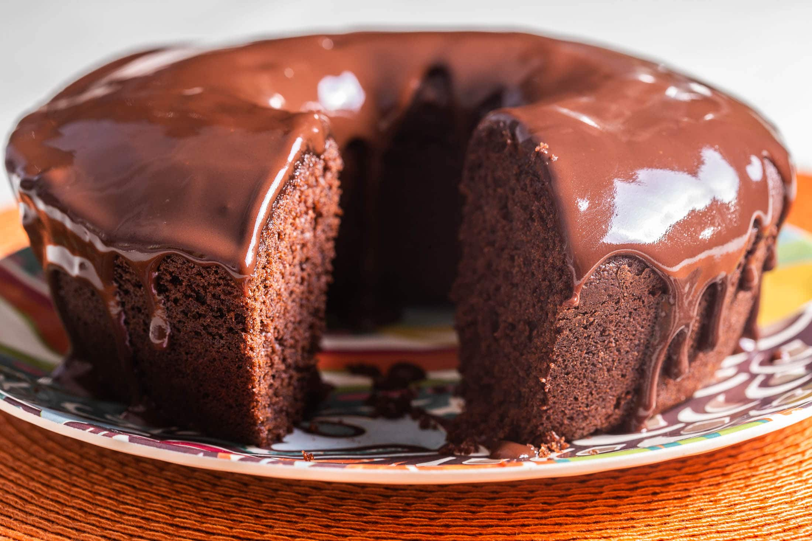

Receita de Bolo de chocolate

Massa
3 ovos
2 xícaras (chá) de farinha de trigo
1 xícara (chá) de chocolate em pó ou achocolatado
1/2 xícara (chá) de óleo
1 colher (sopa) de fermento em pó
1 pitada de sal
1 xícara (chá) de água quente
Cobertura
4 colheres (sopa) de leite
1/2 xícara (chá) de chocolate em pó
1 colher (sopa) de manteiga
1 xícara (chá) de açúcar
Utensílios
Liquidificador
Panela
Tijela
Forma de Bolo
Massa
Em um liquidificador, bata os ovos, o açúcar, o óleo, o achocolatado e a farinha de trigo.
Despeje a massa em uma tigela e adicione a água quente e o fermento, misturando bem.
Despeje a massa em uma forma untada e asse em forno médio-alto (200° C), preaquecido, por 40 minutos.
Desenforme ainda quente.
Cobertura
Em uma panela, leve todos os ingredientes ao fogo até levantar fervura.
Despeje ainda quente em cima do bolo.